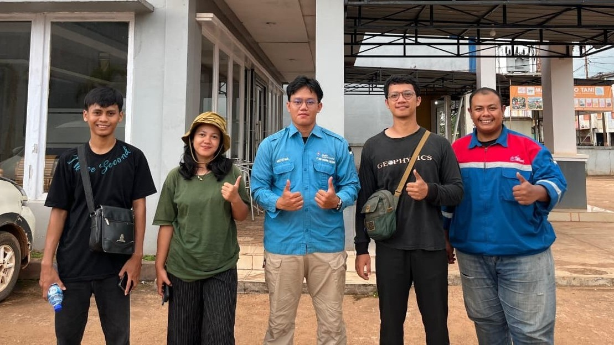
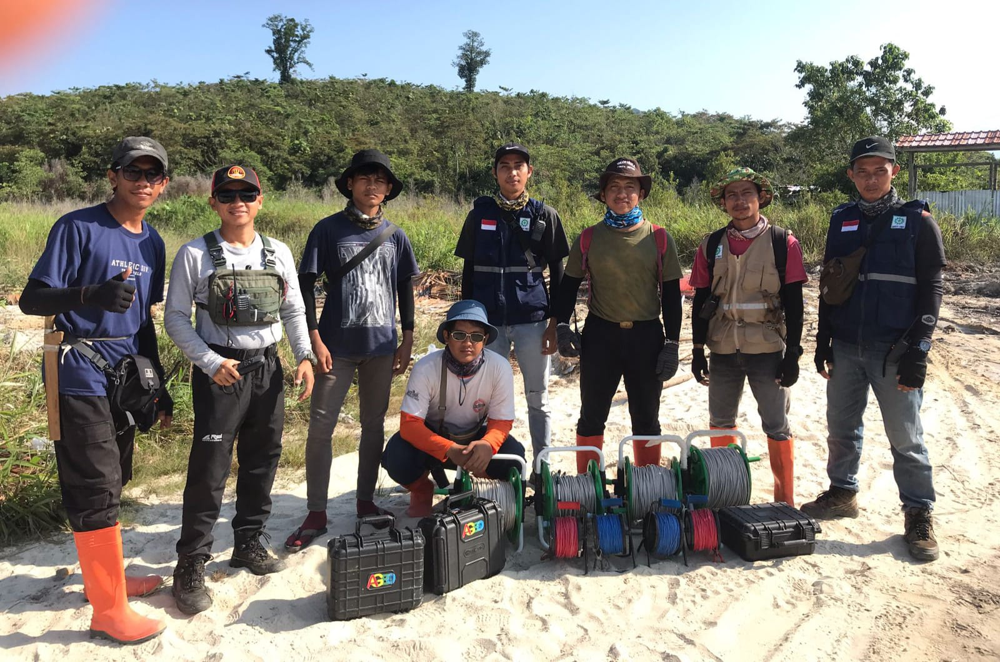
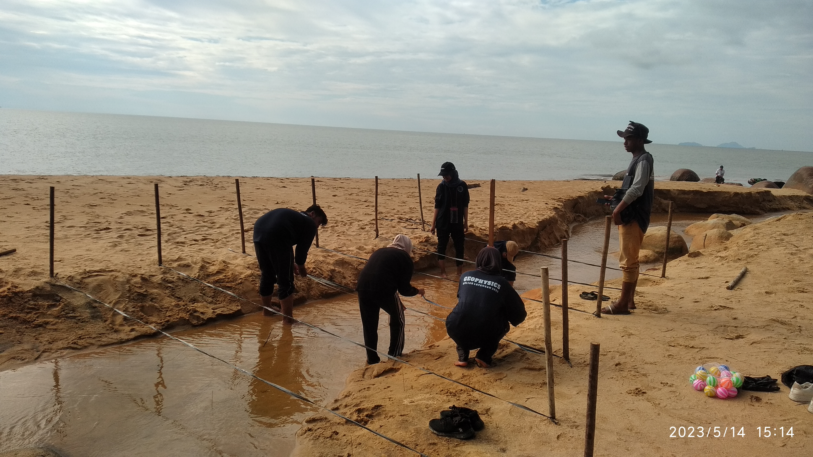

Geophysical Survey
Support for geoelectrical field surveys, data preparation, processing, visualization, and basic subsurface interpretation.
Junior Geophysicist and GIS Surveyor with field experience in mineral exploration, geoelectrical surveying, topographic mapping, drilling validation, and environmental assessment. Experienced in processing and interpreting subsurface and geospatial data using QGIS, Global Mapper, and Res2DInv.
Academic background supporting my work in geophysics, surveying, and geospatial analysis.
• Cumulative GPA: 3.28/4.0
• Indonesian Geophysics Student Association
• Thesis: Comparative Analysis of Weibull and Rayleigh Distributions for Identifying Dominant Wind Speeds in Ketapang Regency.
• Vocational Competency Certification (UKK): Competent in Land Surveying
• Proficient in operating surveying instruments such as Total Station and Auto Level
• Focused on topographic surveying, spatial mapping, contouring, GIS data entry, and coordinate calculations
A combination of field operations, geoscience analysis, GIS, and technical tools.
Field and technical experience in geophysics, surveying, GIS, and exploration.



Geoscience and geospatial services based on field and data-processing experience.
Support for geoelectrical field surveys, data preparation, processing, visualization, and basic subsurface interpretation.
GIS data processing, spatial visualization, topographic mapping, and map preparation using QGIS and Global Mapper.
Field support for mineral exploration activities, geological observations, drilling validation, and integration of field data.
Organizing and interpreting geophysical and geospatial datasets into clear information that supports technical decisions.
Frequently asked questions about my background, skills, experience, and professional services.
I have a background in Geophysics from Tanjungpura University and previously studied Geomatics Engineering at SMK Negeri 4 Pontianak.
My main areas include geophysical surveying, GIS and mapping, topographic surveying, mineral exploration support, geoelectrical data processing, and geospatial data interpretation.
I have experience using QGIS, Global Mapper, and Res2DInv for GIS processing, mapping, geospatial visualization, and geoelectrical data processing.
Yes. My experience includes field surveying, geoelectrical surveys, topographic mapping, field data collection, drilling validation, measurement, and technical field support.
I have experience operating surveying instruments such as Total Station and Auto Level for land and topographic surveying.
Yes. I am open to professional opportunities, field survey work, GIS-related projects, geoscience roles, exploration projects, and other opportunities related to my skills and experience.
You can contact me through email at aji.saputro410@gmail.com or through my social media profiles available on this portfolio.